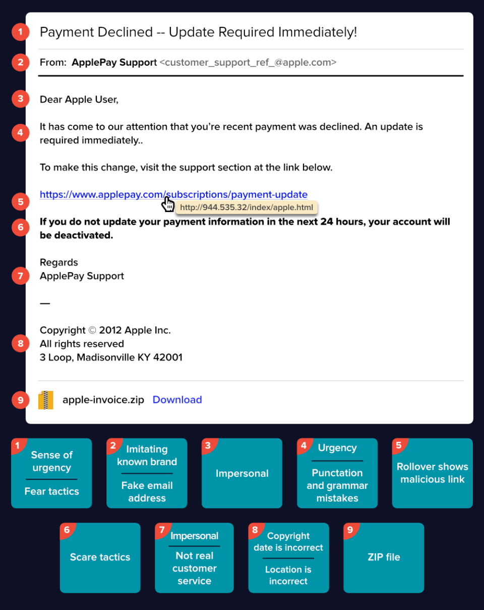

Introduction
Phishing is a type of social engineering attacks that occurs when an attacker sends a malicious email, message or text to the victim. The attacker pretends to be someone that is a trusted individual or company and lures the victim into clicking a malicious link.
For example, the attacker's goal is to get the victim's bank account information so he sends a phishing email to his victim. The typical anatomy of a phishing email is as follows:

Some of us may immediately notice the email above as a scam while some of us won't. Just like us, email services may notice as well that this is a scam and automatically put it under our “spam” folder. The question is, how did some malicious emails still goes directly to our inbox and not in spam?
The answer to this is simple, attackers use tools that determine the “spamminess” of a message. Spamminess refers to the degree in which an email is being spammy. This also refers to the possibility of an email ending up in spam folder.
Some of the websites that tests the spamminess of an email are:
- mail-tester.com
- analyze.mail
- mailgenius.com
After ensuring the phishing email will not go to spam folder, we can see in the email above that the sender is customer_support_ref_@apple.com. Since the sender's email is from apple.com, this somehow increases the likelihood of the victim falling for the phishing attack. The question is, how come that this from apple.com but the email is a phishing?
Here comes Domain-based Message Authentication, Reporting, and Conformance (DMARC), DomainKeys Identified Mail (DKIM), and Sender Policy Framework(SPF) records.
References:
https://www.imperva.com/learn/application-security/phishing-attack-scam/https://www.varonis.com/blog/spot-phishing-scam